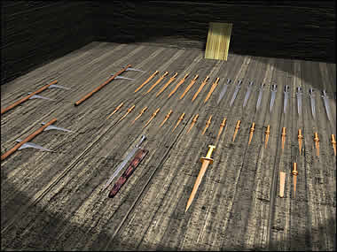

Weapons Chamber

In this chamber there is a collection of weapons. They were probably placed here to protect the dead person in the afterlife and to represent his power. Some of these may be weapons which the lord used during his life. Ancient China could be a hostile and dangerous place. After the fall of the Western Zhou dynasty, China was split into many smaller states. From 770 B.C. to 221 B.C. these states were involved in constant wars and struggles for power. In one battle, at Changping in 260 B.C., over half a million men were killed. Click on the objects for more information. |